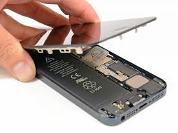
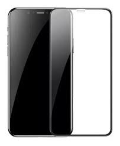

Teccell – Excelência em Assistência Técnica para Celulares
Sobre Nós
A Teccell é uma empresa especializada em atendimento rápido, confiável e profissional para smartphones de todas as marcas. é proporcionar aos clientes um serviço eficiente, com transparência, segurança e garantia de qualidade.A Teccell Assistência Técnica de Celulares foi fundada em 4 de dezembro de 2014, na cidade de Frutal, Minas Gerais. Desde sua inauguração, a empresa tem se dedicado a oferecer serviços especializados de reparação e manutenção de equipamentos de comunicação, com foco em celulares e smartphones.
missão e Valores da empresa
A missão da Teccell é proporcionar soluções rápidas e eficientes para os problemas dos dispositivos móveis, utilizando peças de alta qualidade e técnicas avançadas. A empresa preza pela transparência, comprometimento e excelência no atendimento, buscando sempre a satisfação total de seus clientes
Diferenciais da empresa
- Técnicos certificados: Mão de obra especializada e segura
- Peças com garantia: Garantia que protege contra defeitos nas reposições
- Atendimento personalizado: Esforço em entender e solucionar as necessidades de cada cliente
- Transparência no orçamento: Você recebe um valor fechado antes do conserto
Como funciona
- Traga seu aparelho na loja ou entre em contato conosco.
- Realizamos o diagnóstico gratuito e apresentamos um orçamento detalhado
- Após sua aprovação, iniciamos o conserto imediatamente.
- Você retorna no prazo combinado para buscar seu celular pronto, testado e com garantia.
Nossos Clientes
Aqui está Alguns dos nossos eficientes serviços
Antes
Depois
Antes
Depois
Entre em Contato
- Telefone: (31) 934455667
- WhatsApp: +55 (31) 998788790
- E-mail: teccell.assistencia.com.br
- Instagram: @TecCell.ufc
- Facebook: @TecCell.
Para saber sobre nossa lista de eventos para 2025 Clique Aqui